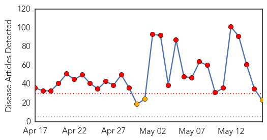
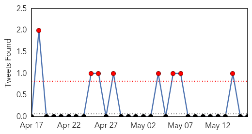
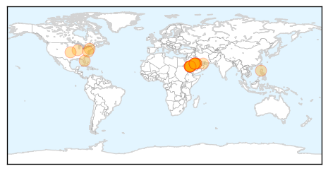
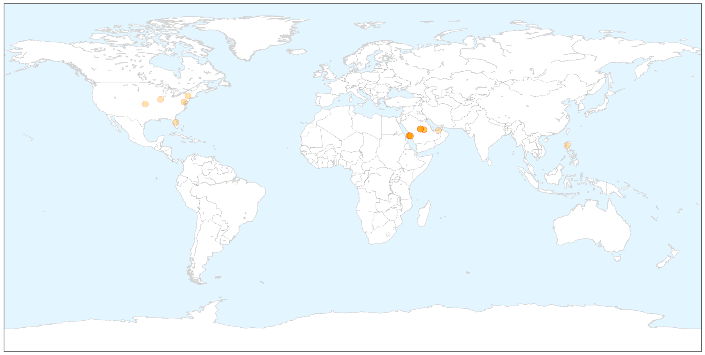

MERS
30-Day Web Trend
27 alerts, 3 warnings

30-Day Twitter Trend
8 alerts, 0 warnings

Article Locations

X

Article Confidences

Top Articles:
- 1.000
- Scientists Worry About Milder Cases of MERS
- 1.000
- MERS Watch: 6-Week Skyrocket
- 1.000
- Middle East respiratory syndrome coronavirus (MERS-CoV): situation update and cases reported in the Netherlands
- 1.000
- Silently among us: Scientists worry about milder cases of MERS
- 0.999
- Gulf Daily News Local News Awareness push on Mers virus
- 0.999
- MERS Still Not a Global Emergency
- 0.999
- Middle East respiratory syndrome coronavirus (MERS-CoV) – update (15 May 2014) - Jordan
- 0.998
- Brunei gov't warns of MERS-CoV risk
- 0.998
- DH closely monitors additional overseas MERS cases
- 0.997
- Saudis question Makkah preparedness as Mers spreads
- 0.996
- WHO: Another Case Of MERS-CoV Infection Reported In US
- 0.996
- Public Health says it’s ready for MERS
- 0.995
- A mystery virus, still
- 0.990
- Consider MERS in specific US patients with respiratory symptoms
- 0.990
- Saudi Arabia reports 6 more MERS cases, 3 deaths
- 0.986
- Saudi officials question Mecca’s preparedness as MERS spreads
- 0.982
- MERS spread leads Saudis to question Mecca's preparedeness
- 0.979
- CDC's BioMosaic helps track MERS -- FCW
- 0.965
- POEA issues medical alert on MERS, polio
- 0.933
- The Portland Press Herald / Maine Sunday Telegram
- 0.929
- Virus causes concern among farmers
- 0.895
- MoI Hosts Awareness Lecture on MERS Coronavirus
- 0.675
- Businessmen made aware of coronavirus threat
Top Tweets:
-
No tweets found for May 16, 2014